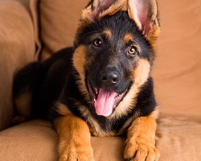
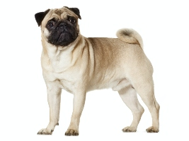
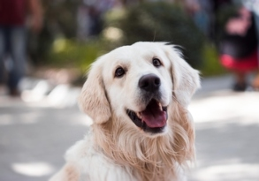

PERROS EN ADOPCION
El perro es un mamífero carnívoro de la familia de los cánidos, que constituye una subespecie
del lobo. Su tamaño o talla, su forma y su pelaje son diversos según la raza. Posee un oído y un olfato
muy desarrollados. Este último es su principal órgano sensorial.
Nuestros perritos que estan en adopcion son :
Voler a menu principal
 GASPER
 ROCCO
 COCO